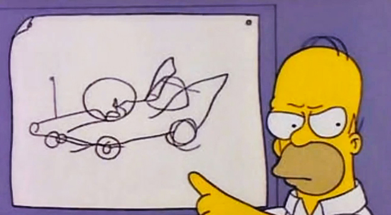

A behind the scenes look at my work in progress, design inspiration, questionable
creations, & random life updates.
Febrauary 2021
FEBRUARY 02, 2021
The design process recently came up with my team. Some engineers were reluctant to add feedback as they were worried about being perceived as too negative.
think this was a failing on my part - not encouraging or giving them space to contribute and feel comfortable asking questions.
Big or small, these questions are always beneficial. The can serve as jumping off points for larger discussions, or point out obvious problems from an engineering perspective that design is ignorant towards. The reality is I rarely have all the answers.
I think the Simpsons nailed it… I’m just Homer designing a car. Without meaningful contributions from your team your project is on a path towards some form of failure, either in the near future or down the line.
Febrauary 2021
DECEMBER 22, 2020
I was at a bit of a loose end when Lock Down Ireland Part 2: The Lock Down Strikes Back, happened. Needing something to sink my teeth into during the evenings, I got thinking about the music player I added to Browso, which was built on the Sound Cloud Widget API. I was curious about ways in which I could push working with this further.
Does anyone else have music that they only listen to when they are working? For me, specifically with coding, I’m all about Retro and Synthwave. Dancy, minimal vocals, high BPM. Perfect coding music!
I started wondering what would a UI inspired by this kind music look like, exactly? Over a weekend I mashed some 80s influences together and arrived at code with me. Built with three.js and anime.js, it’s my take on a retro future UI. Maybe I’ll have a future skinning winamp players.
DECEMBER / 2020
DECEMBER 31, 2020
Picked up a reMarkable tablet during the week. It’s a e-ink tablet with a focus on sketching. In fact, sketching is about all you can do with it.
That said, wow is it good at its job. The sketching is remarkable. It’s a joy! Feels just like paper, but with the obvious benefits of digital editing. I can see it slotting nicely into my workflow.